チュートリアル一覧に戻る : Oracle Cloud Infrastructure チュートリアル
クラウド上で仮想デスクトップの環境が必要なケースはありませんか？PCなどのローカル端末にデータを配置せず、リモートからOCIにアクセスして作業したい、オフィス以外からでも社内システムにアクセスしたい、そのような要件がある場合にOCIのセキュア・デスクトップのサービスが活用できます。
OCI上で仮想デスクトップ環境を迅速にデプロイできて、ローカル端末にデータを持たせないことでセキュリティを確保できます。
このチュートリアルではOracle Linuxのデスクトップ環境を作ってアクセスします。（Windows OSを利用する場合はWindowsライセンスの持ち込みが必要です。）
セキュア・デスクトップのサービス概要については以下の資料もご参照ください。
所要時間： 約2時間
前提条件：
注意:
- チュートリアル内の画面ショットについてはOracle Cloud Infrastructureの現在のコンソール画面と異なっている場合があります
目次 :
- OCI セキュア・デスクトップの構成概要
- 事前準備
- デスクトップ・イメージの準備
- デスクトップ・プールの作成
- ユーザーからのデスクトップへのアクセス（ブラウザ利用）
- ユーザーからのデスクトップへのアクセス（デスクトップ・クライアント利用）
- デスクトップの休止の確認
1. OCI セキュア・デスクトップの構成概要
環境構築にあたって理解しておくべきアーキテクチャと構成要素を整理しておきます。
- デスクトップ管理者があらかじめ「デスクトップ・プール」を定義して仮想デスクトップ環境を準備します。
- デスクトップ・プール：デスクトップ・イメージやシェイプ、デスクトップの数、ネットワークなどを定義したリソース。
- デスクトップ・イメージ： デスクトップの実体となるコンピュート・インスタンスを起動するイメージ
- 各デスクトップ・ユーザーがデスクトップを起動すると、デスクトップ・プールの設定に従ってお客様テナンシ内のプライベートなネットワークの中にデスクトップ用のコンピュート・インスタンスが起動されます。
- デスクトップは各ユーザーごとに永続化されます。（ブロック・ボリュームにデータを永続保持）
- データはお客様テナンシの中に存在しているためセキュアに利用できます。
- デスクトップ・プール：デスクトップ・イメージやシェイプ、デスクトップの数、ネットワークなどを定義したリソース。
- デスクトップ・ユーザーはブラウザ経由でエンドユーザ用のWebアプリケーションのURLにアクセスし、利用可能なデスクトップを選択して起動します。
- デスクトップ・ユーザーの認証はOCIテナンシのIAM認証を利用します。権限を付与されているデスクトップ・プールにアクセスすることが可能です。
- 各ユーザーごとに個別のデスクトップが起動され、他人のデスクトップにはアクセスできないようになっています。
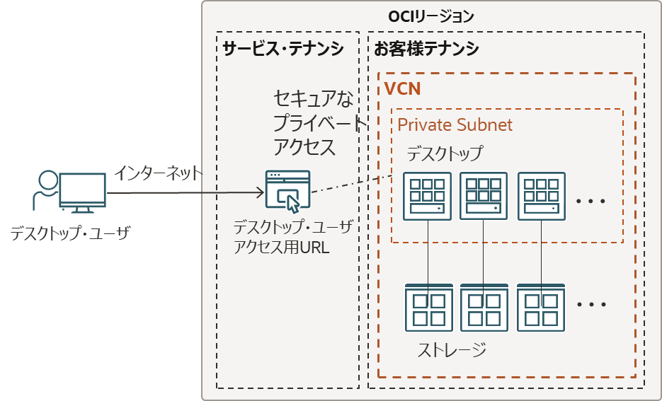
それではこれらの環境を作っていきましょう。
2. 事前設定
利用するための事前準備は、ドキュメントの以下の章に記載されているので、こちらに従って実施していきます。
1. IAMポリシーの作成
今回はコンパートメント、ユーザー、グループはあらかじめ作成済みのものを使うため、IAMポリシーの作成から実施していきます。
コンパートメントは役割に応じて複数に分けることもできますが、今回は簡易的に実施するためチュートリアル用のコンパートメント1つの中ですべての操作を実施していきます。
1. サービス向けのポリシー
このあと作成していくセキュア・デスクトップの「デスクトップ・プール」はユーザのテナンシ内で動作します。セキュア・デスクトップのサービスを利用するためには、このデスクトップ・プールを指す動的グループに対して権限付与を行う必要があります。
動的グループの作成
利用するコンパートメントのOCIDを確認して、動的グループを作成。
-
メニュー
アイデンティティ→defaultドメイン→動的グループ→動的グループの作成 -
動的グループの作成画面で以下を入力して
作成ボタンをクリック- 名前：任意の名前
- 説明：任意の説明
- 一致ルール
- ルール1に以下のように入力します。
All {resource.type = 'desktoppool', resource.compartment.id = '<コンパートメントのOCID>'}
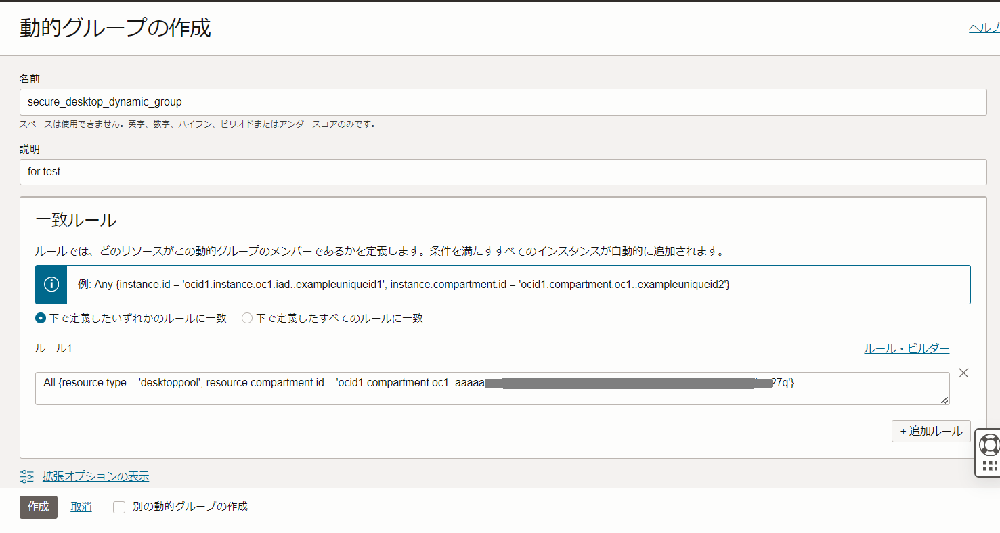
ポリシーの作成
-
メニュー
アイデンティティとセキュリティ→ポリシー -
ルート・コンパートメントにポリシーを作成するため、リスト範囲のコンパートメントで
<テナンシ名（ルート）>を選択し、ポリシーの作成をクリック -
ポリシーの作成画面で以下の情報を入力し、
作成をクリック-
名前：任意の名前
-
説明：任意の説明
-
コンパートメント：ルート・コンパートメントが選択されていることを確認。
-
ポリシー・ビルダー：
手動エディタの表示を有効にしたうえで、以下のポリシーを記載。<dyamic-group>は、さきほど作成した動的グループの名前、<compartment-name>は実際に利用するコンパートメントの名前に置き換えてください。
-
Allow dynamic-group <dynamic-group> to {DOMAIN_INSPECT} in tenancy
Allow dynamic-group <dynamic-group> to inspect users in tenancy
Allow dynamic-group <dynamic-group> to inspect compartments in tenancy
Allow dynamic-group <dynamic-group> to use tag-namespaces in tenancy
Allow dynamic-group <dynamic-group> to use virtual-network-family in compartment <compartment-name>
Allow dynamic-group <dynamic-group> to {VCN_ATTACH, VCN_DETACH} in compartment <compartment-name>
Allow dynamic-group <dynamic-group> to manage virtual-network-family in compartment <compartment-name>
Allow dynamic-group <dynamic-group> to read instance-images in compartment <compartment-name>
Allow dynamic-group <dynamic-group> to manage instance-family in compartment <compartment-name>
Allow dynamic-group <dynamic-group> to manage volume-family in compartment <compartment-name>
Allow dynamic-group <dynamic-group> to manage dedicated-vm-hosts in compartment <compartment-name>
Allow dynamic-group <dynamic-group> to manage orm-family in compartment <compartment-name>
Allow dynamic-group <dynamic-group> to {VNIC_CREATE, VNIC_DELETE} in compartment <compartment-name>
Allow dynamic-group <dynamic-group> to manage instance-configurations in compartment <compartment-name>
ポリシー作成例
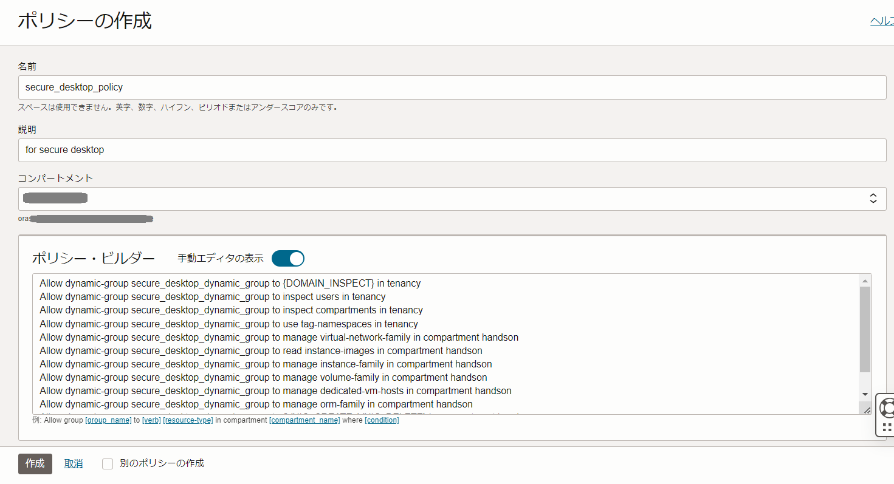
2. ユーザー向けのポリシー
セキュア・デスクトップの環境を作成したり管理する管理者向けのポリシーと、実際にデスクトップアクセスを行うエンドユーザー向けのポリシーを設定します。今回利用するユーザーがコンパートメント内のmanage all-resources権限を持っていればこれらはカバーされるので省略可能ですが、もし追加が必要な場合は以下の通り適切なIAMポリシーを作成してください。
管理ユーザー向け
（利用するコンパートメントのmanage all-resources権限を持っていればこれらはカバーされますので省略可能です。）
Allow group <desktop-administrators> to manage desktop-pool-family in compartment <desktop-compartment>
Allow group <desktop-administrators> to read all-resources in compartment <desktop-compartment>
Allow group <desktop-administrators> to use virtual-network-family in compartment <networks-compartment>
Allow group <desktop-administrators> to use instance-images in compartment <images-compartment>
デスクトップ利用ユーザー向け
（利用するコンパートメントのmanage all-resources権限を持っていればこれらはカバーされますので省略可能です。）
Allow group <desktop-users> to use published-desktop in compartment <desktop-compartment>
2. ネットワークの準備
デスクトップ・プール内に起動してくるコンピュート・インスタンスが配置されるVCNとサブネットを用意します。今回は、あらかじめ その2 - クラウドに仮想ネットワーク(VCN)を作る を通じて仮想クラウド・ネットワーク(VCN)の作成 で作成したVCNとサブネットを使いますので作成は不要です。
また、デスクトップ・プールを起動すると、自動的にセキュア・デスクトップが動作するために必要なセキュリティ・ルールが設定されたNSGが作成されます。それ以外のセキュリティ・ルールを追加したい場合は自作のNSGを追加することもできます。
3.ストレージ・ボリューム
特に事前作成は必要ありません。ストレージを追加したい場合は、このあとのデスクトップ・プールで各デスクトップ用のストレージを何GBのサイズに設定するかだけ決めておきます。今回は最小サイズである50GBのボリュームをアタッチすることにします。
3. デスクトップ・イメージの準備
デスクトップを起動する際に利用するゴールデン・イメージを作成します。これは通常のコンピュート・サービスのカスタム・イメージと同じ仕組みを使います。ただし、セキュア・デスクトップで利用するカスタム・イメージには専用のタグを付与する必要があります。
今回は下記ドキュメントのページで提供されている、Oracle提供のセキュア・デスクトップ用に事前構成済のOracle Linux 8 イメージを使っていきます。
- 参考ドキュメント：サポートされているイメージ
Note
- Windows 10/11の場合はOracleからイメージ提供されていないため、利用したい場合には以下のドキュメントを参考にイメージを準備してください。また、Windows 10/11の場合はOSライセンス持ち込み(BYOL)が必要です。
https://docs.oracle.com/ja-jp/iaas/secure-desktops/windows-image.htm
- イメージ・ビルダーを利用してWindowsイメージを作成することも可能です。イメージ・ビルダーについては以下のサポート・ドキュメントを参照してください。
- Reference OCI Secure Desktops: How To Create a Windows Image For Use With OCI Secure Desktops Using the OCI Secure Desktops Image Builder (MOS Doc ID 3004854.1)
- メニューの
コンピュート→カスタム・イメージを開く イメージのインポートボタンをクリックしてウィザードに以下を入力し、左下のイメージのインポートをクリック。- 名前：任意の名前
- オペレーティング・システム：Oracle Linux
- オブジェクト・ストレージURLからインポート：下記ドキュメントページに記載されているOracle Linux 8 のイメージのURLを張り付ける。イメージが更新される場合もあるので、実施する際に直接以下のマニュアルを参照して最新のURLを確認すること。
- イメージ・タイプ：OCI
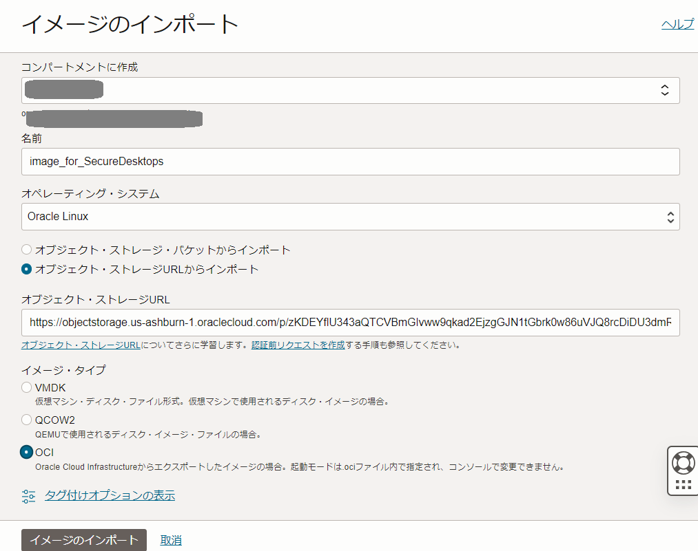
-
インポートにはしばらく時間がかかるので、カスタム・イメージが使用可能になるまで待ちます。
-
カスタム・イメージの詳細画面→その他のアクション → タグの追加をクリックして、以下3つのフリーフォーム・タグを追加します。これを行うことにより、このあとのデスクトップ・プール作成時にこのイメージを選択できるようになります。-
oci:desktops:is_desktop_image： true
-
oci:desktops:image_os_type： Oracle Linux
-
oci:desktops:image_version：1
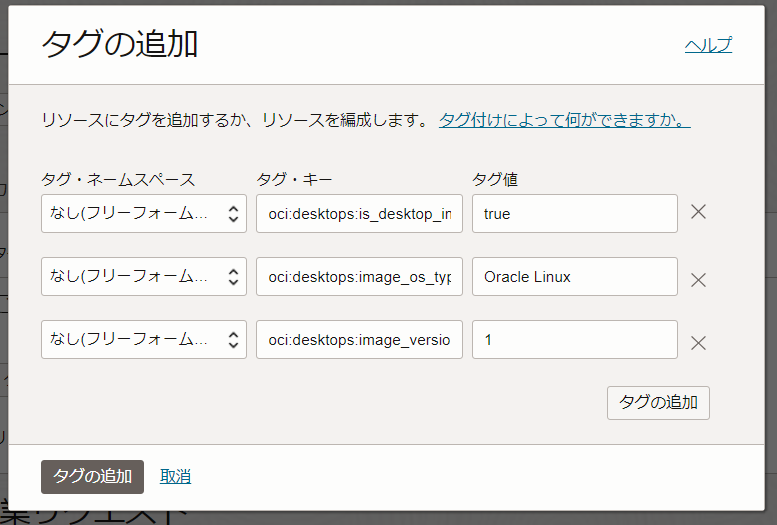
-
以上でイメージの準備は完了です。
4. デスクトップ・プールの作成
続いて、デスクトップ・プールを作っていきます。起動するデスクトップの定義情報を設定する部分です。
- メニューの
コンピュート→セキュア・デスクトップ→デスクトップ・プールを開く。
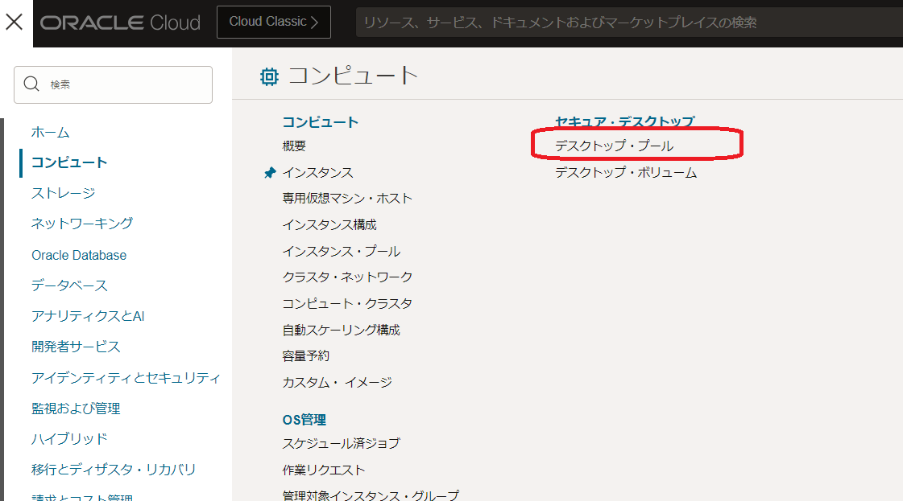
-
デスクトップ・プールの作成をクリックして、以下の情報を入力。-
名前：任意
-
説明：任意
-
プール開始時間、プール停止時間（オプション）：今回は特に設定しません。プール作成後最初の利用開始時間やプールを以後使用しないという利用終了時間を管理者側で制御したい場合に設定できます。
-
管理者連絡先詳細（オプション）：今回は特に設定しません。デスクトップ・ユーザからの連絡を受ける連絡先です。
-
管理者権限：デフォルトは無効です。今回は有効化にチェックを入れておきます。
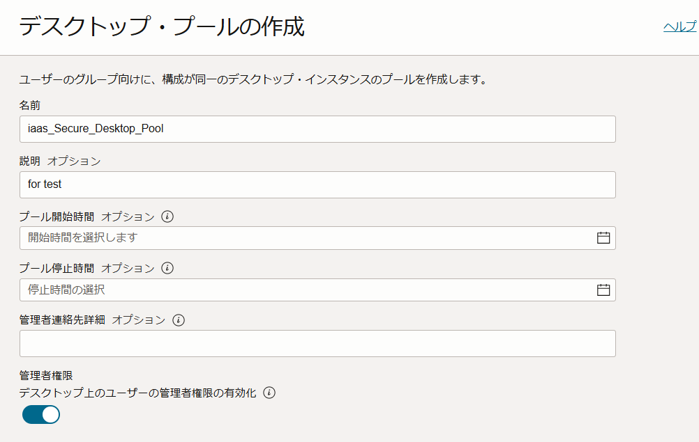
-
プールサイズ
- 最大サイズ：このデスクトップ・プールで起動できるデスクトップの最大数です。今回は最小の 10に設定します。
- スタンバイ・サイズ：ユーザーが初回アクセスした際に迅速に利用できるようにあらかじめスタンバイ状態にしておくデスクトップの数です。今回は 1 に設定します。
-
配置：選択肢はAD1のみです。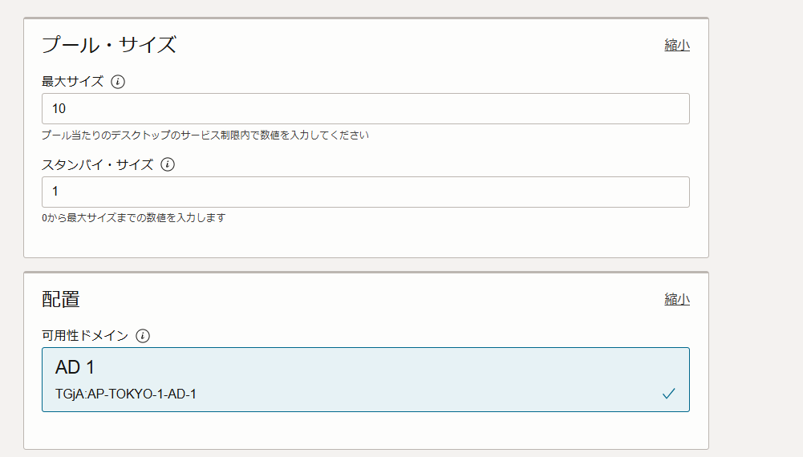
-
イメージとシェイプ
-
イメージ：先ほど作成したイメージを選択。
-
Use dedicated virtual machine host：専用仮想マシンホストを利用する場合に有効化しますが、今回はデフォルトの無効のままで問題ありません。
-
Desktop virtual machine shape type： Flexible を選択
- デスクトップ・シェイプ：VM.Standard.E5.Flex を選択
- Desktop system resource configuration：カスタムを選択
- OCPUの数：1
- メモリー量(GB)：4
- ベースラインのOCPU使用量/OCPU：100%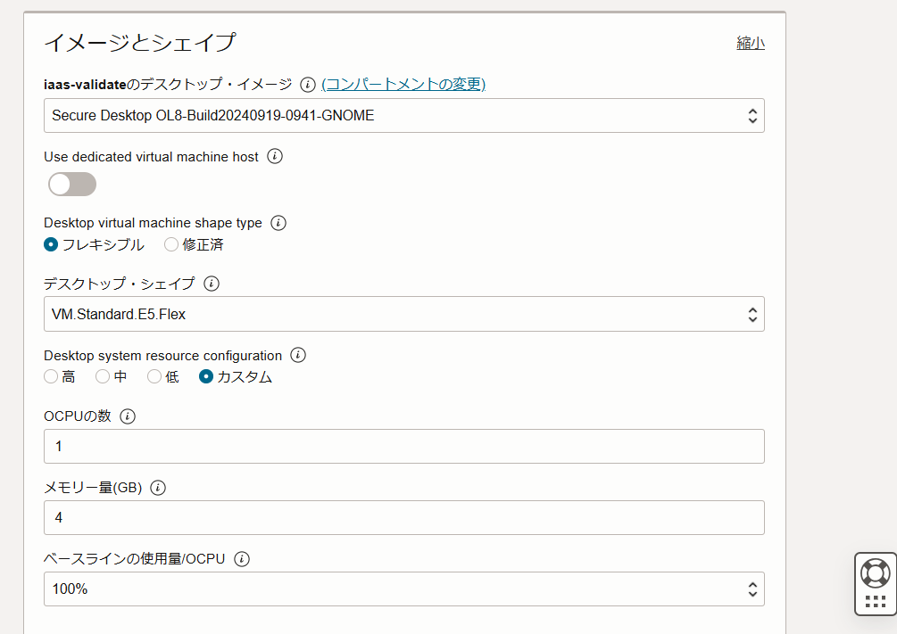
-
ストレージ
- デスクトップ・ストレージの有効化：チェックを入れる
- Desktop storage volume size(GB)：50 GB（デフォルト）
- バックアップ・ポリシー：ポリシーなし（デフォルト）
-
Desktop pool network：デスクトップ・プールが起動されるネットワークを選択します。
-
仮想クラウド・ネットワーク：あらかじめ作成済みのVCNを選択
-
サブネット：VCN内のプライベート・サブネットを選択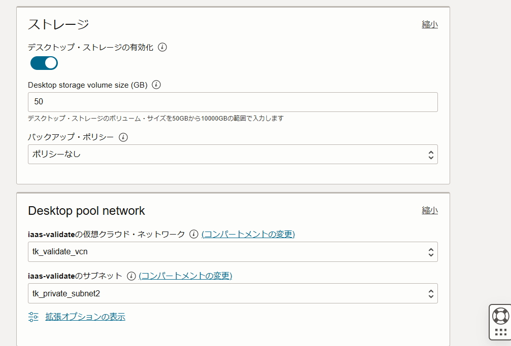
-
Private access network：ローカル端末から専用線などのプライベート・ネットワーク経由で利用する場合に構成しますが、今回はインターネット経由で利用するので構成しません。
- プライベート・エンドポイント・アクセスのみ：無効のまま（デフォルト）
-
デバイス・アクセス・ポリシー
- クリップボード・アクセス：完全（デフォルト）
- 音声アクセス：完全（デフォルト）
- ドライブ・マッピング・アクセス：読取り/書込み（デフォルト）
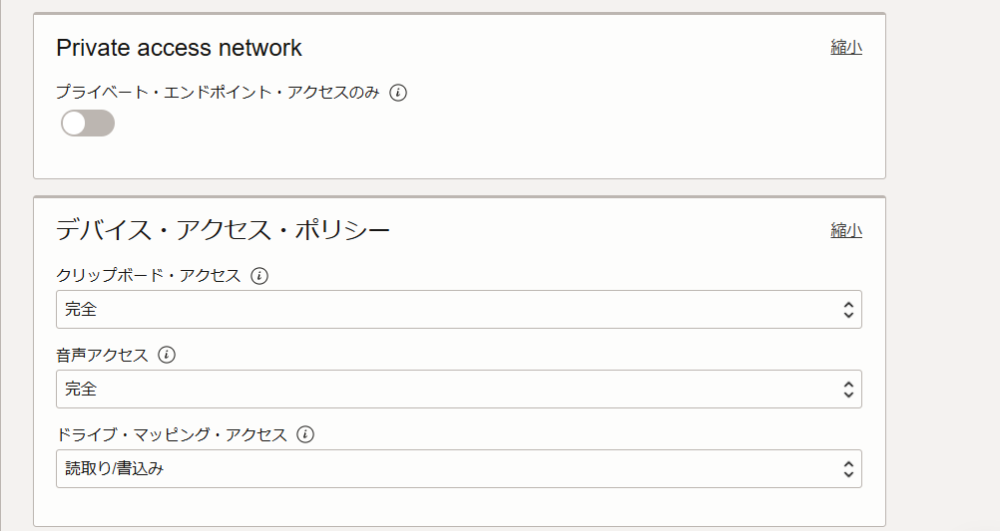
- Desktop Management Policy：デスクトップの起動停止のスケジューリングもしくはデスクトップのアクティビティの状況によって休止状態にするかを設定できます。今回は、15分なにも操作がなければセッションを切断し、さらにセッション切断後60分アクティビティがなければデスクトップを停止させるように設定します。
- Action on inactivity：切断
- Grace period for inactivity（in minutes）：15
- Action on disconnect：停止
- Grace period for disconnect（in minutes）：60 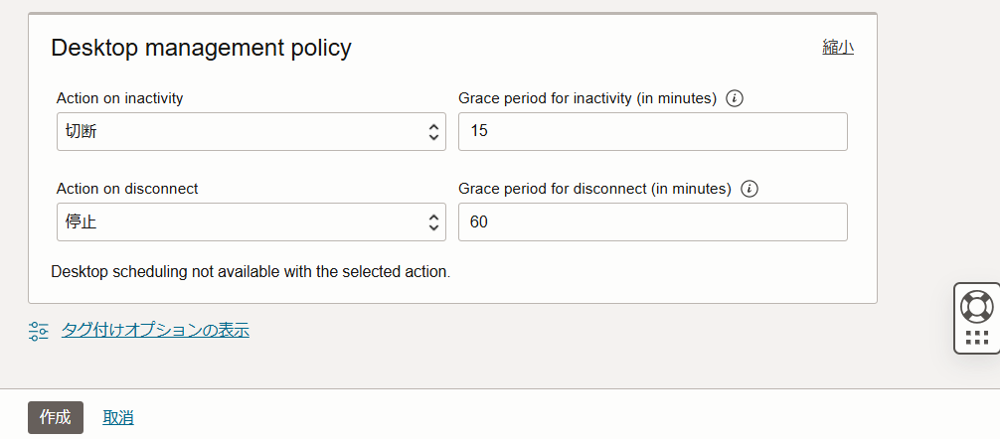
-
-
-
-
-
デスクトップ・プールの画面が開き、作成中（CREATING） の状態になっているので完了までしばらく待ちます。進捗状況は作業リクエストから確認できます。 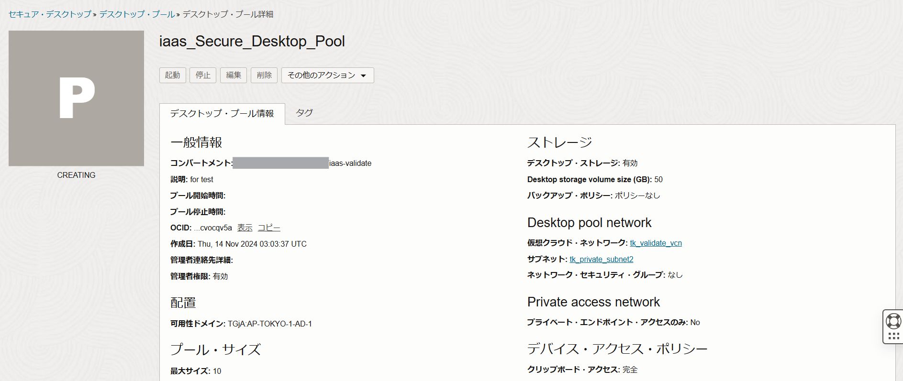
-
ステータスが ACTIVE になればデスクトップ・プールの作成は完了です。 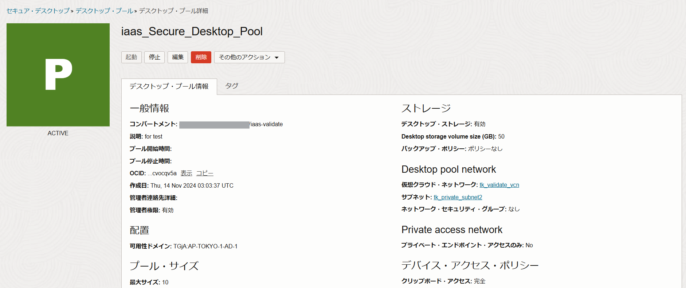
-
画面下のほうの デスクトップ のところを見ると、どのユーザーにも紐づかないデスクトップが1つ作成されていることがわかります。これは、デスクトップのスタンバイを1に設定したので、スタンバイ用のデスクトップが1つ起動されている状態です。
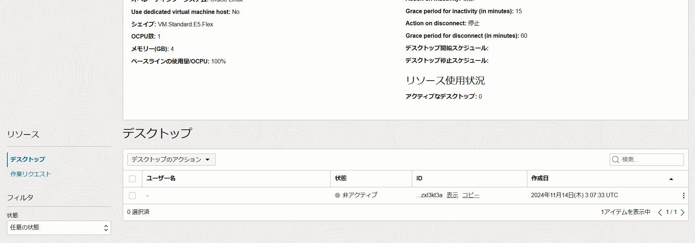
デスクトップ・プールが完成したので、これで管理者側の構築作業は終了です。あとはエンドユーザとして実際にデスクトップにアクセスして使ってみましょう。
5. ユーザーからのデスクトップへのアクセス（ブラウザ利用）
デスクトップを利用するエンドユーザーは、適切なIAMグループに所属しているユーザーである必要があります。ただし、通常のOCIコンソールを利用する必要はありません。デスクトップアクセス用の以下のURLから利用できます。通常は管理者からこのURLをエンドユーザに通知します。
https://published.desktops.ap-tokyo-1.oci.oraclecloud.com/client（Tokyoリージョンの場合）
また、利用するブラウザでポップアップ・ブロックが設定されている場合は解除しておいてください。
-
ブラウザから上記URLにアクセスし、テナンシ名、ユーザー名、パスワードを入力してログイン。必要に応じてMFAでの認証を実施。
-
このようなクライアント用ページが開くので、割り当て済デスクトップのロードが終わるまでしばらく待ちます。 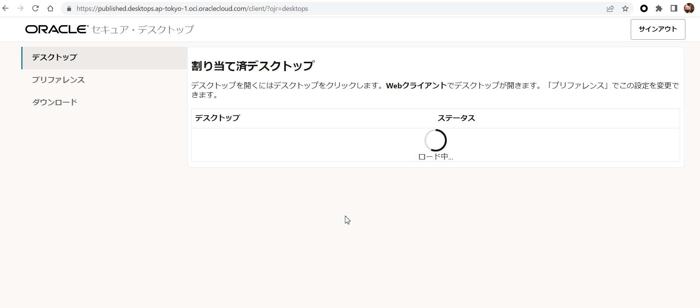
-
ロードが終わると先ほど作成したデスクトップ・プールの名前が表示され、ステータスが使用可能となりました。デスクトップ・プールの名前をクリックします。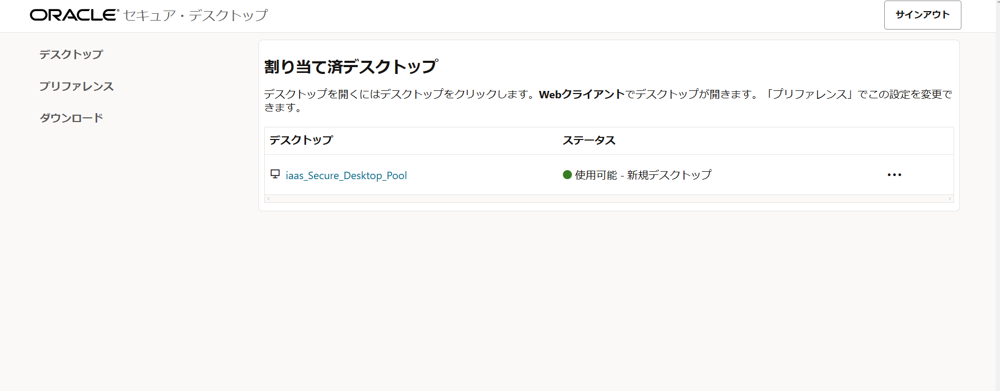
-
このようなポップアップが開きますので、何もせずに待ちます。特に初回アクセス時には新規デスクトップを起動していますのでしばらく時間がかかります。（ポップアップは閉じても問題はありません。） 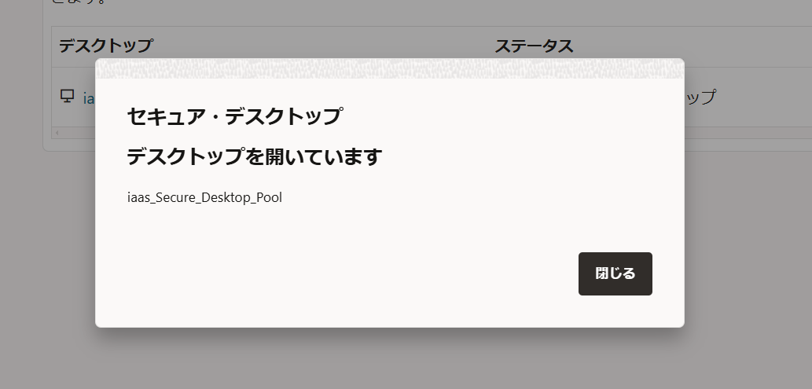
-
しばらく待つと、別タブでこのようなLoading画面が開いてきます。 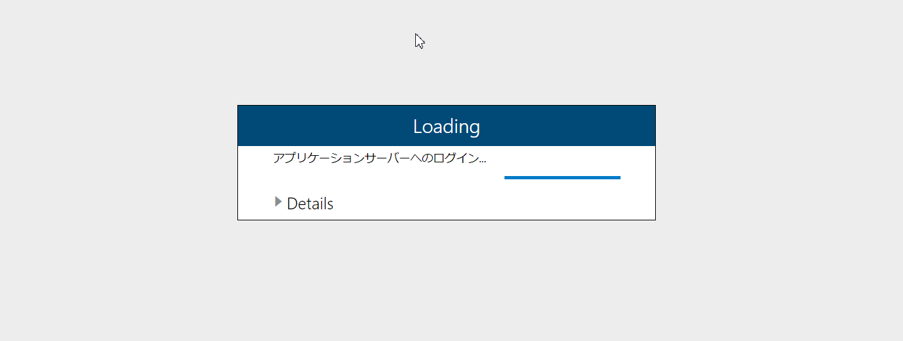
-
もしブラウザからクリップボードアクセスの許可を求められた場合は許可します。 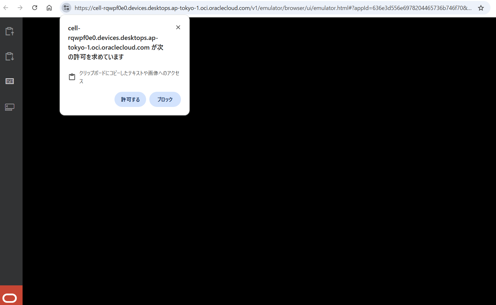
-
gnomeのwelcome画面になっているので、ウィザードに従って、言語設定、キーボード設定、などを行ってください。 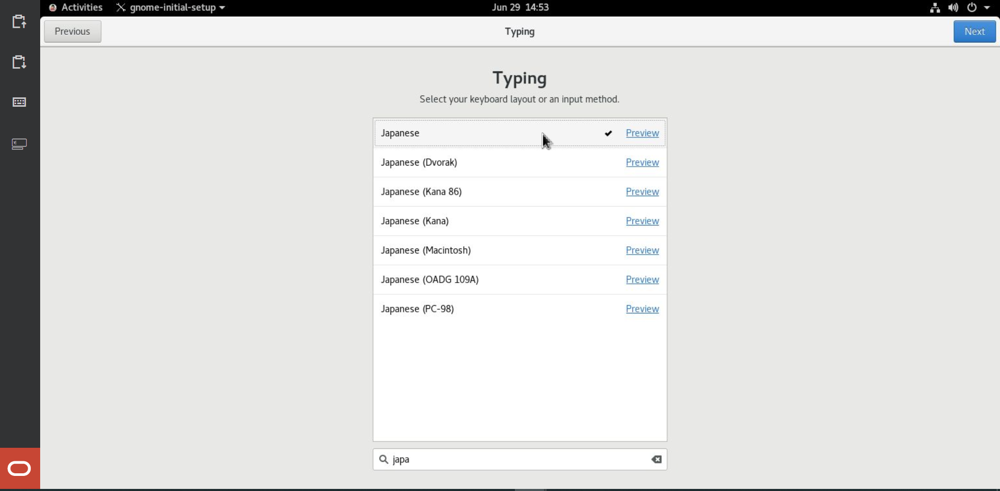
-
デスクトップが利用可能になります。 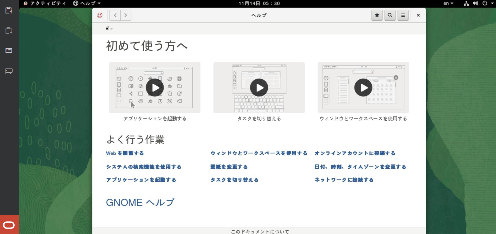
自由にデスクトップを利用してみましょう。
これでユーザに対してインスタンスが割り当て済みとなったので、二回目以降のアクセスはより迅速にデスクトップにアクセスすることが可能です。
6. ユーザーからのデスクトップへのアクセス（デスクトップ・クライアント利用）
ブラウザ内のみで操作するのではなくOracle Secure Global Desktop Clientというクライアント・ソフトウェアをインストールして利用することもできます。できることが少し異なります。
-
メニュー
プリファレンスで 優先クライアントとして「インストール済クライアント」を選択する。 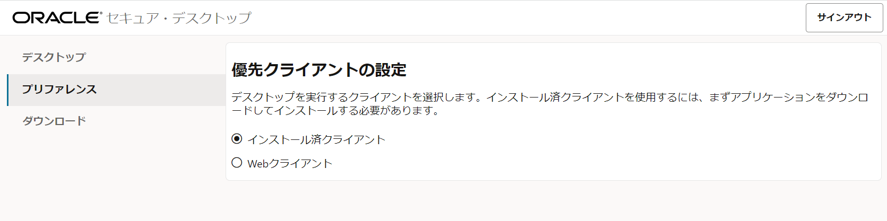 -
ダウンロードメニューからクライアント・ソフトウェアであるOracle Secure Global Desktop Clientをダウンロードしてインストール。利用しているローカル端末のOSに応じて適切なものを選択すること。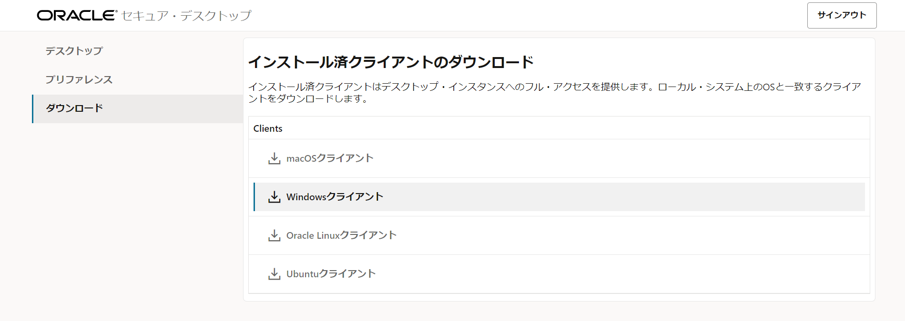 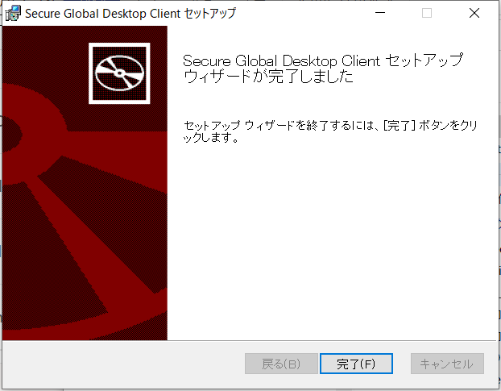
-
先ほどと同様に割り当て済デスクトップから対象のデスクトップ・プール名をクリックする。 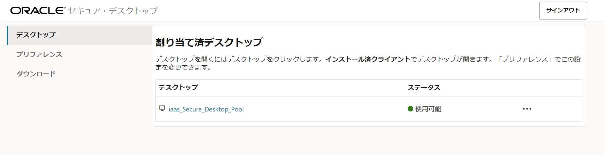
-
ブラウザからアプリケーションの起動について確認を求められた場合は許可してアプリケーションを開く。（優先クライアントをインストール済クライアントに設定している場合は自動的にさきほどインストールしたアプリケーションが起動し、デスクトップ・クライアントからデスクトップが開かれる。）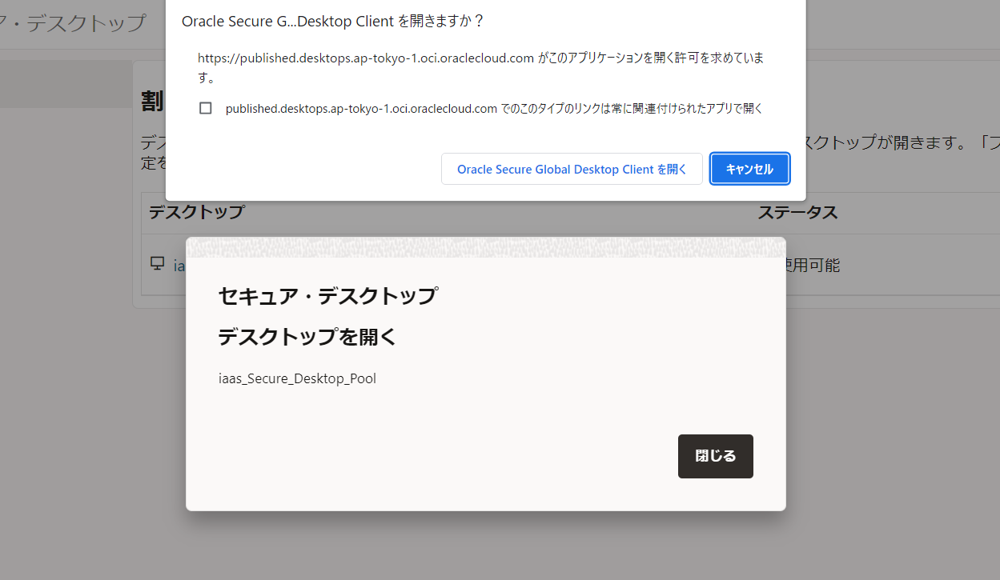
-
ブラウザで表示していたのと同じデスクトップが、自動的にデスクトップ・クライアントのウィンドウとして開かれます。
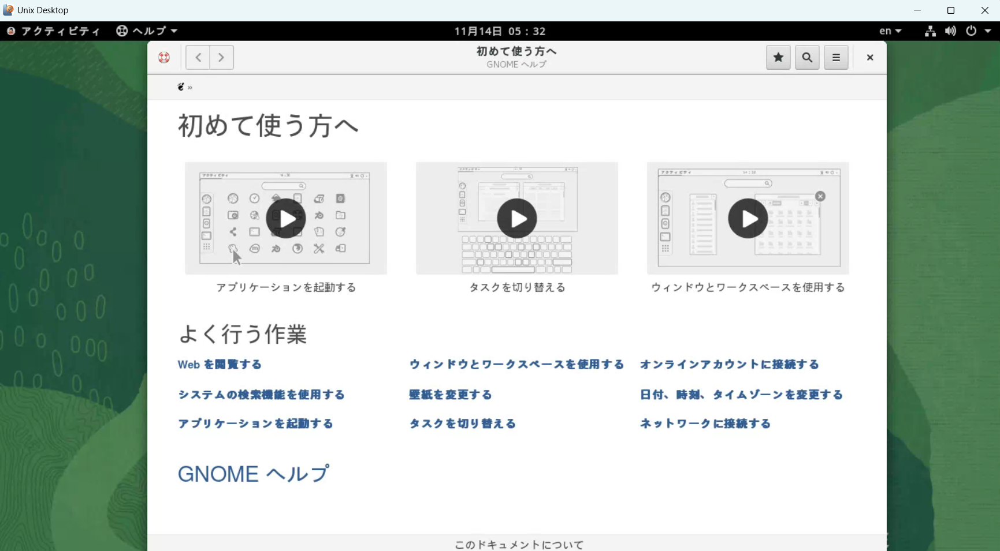
自由にデスクトップの操作をしてみましょう。
デスクトップ・クライアントの場合、ブラウザ・アクセスとは異なり、オーディオ（in / out）が利用できたり、ローカル端末のドライブ・マッピングが可能なので、ローカル端末上のファイルをデスクトップ上のフォルダから開いたり、ドラッグ・アンド・ドロップでコピーしたりもしやすいです。
7. デスクトップの休止の確認
デスクトップ・プール作成時に、デスクトップ上の操作が15分なければ自動的にセッションを切断、セッションが切断されてからアクティビティがなければ（再度デスクトップにアクセスすることがなければ）60分の猶予期間を経てからデスクトップを停止する設定をしました。
この切断と休止の動作を確認してみます。
- デスクトップを起動し、なにもせずにそのまま15分間放置します。ブラウザやインストール済クライアントのウィンドウ内でマウスやキーボードなどの操作を行わないようにしてください。
- 15分経つと、自動的にセッションが切断されることが確認できます。
- さらに60分間デスクトップにアクセスしないでおくと、デスクトップが休止します。OCIコンソールのデスクトップ・プールの画面を開き、画面下部のデスクトップのセクションを確認すると、ユーザーに割り当てられているデスクトップが非アクティブになっていることが確認できます。非アクティブになっている間はコンピュートのVMインスタンスの課金が停止している状態です。再度ユーザーがデスクトップにアクセスすれば自動的に停止前の状態を保持して起動してきます。 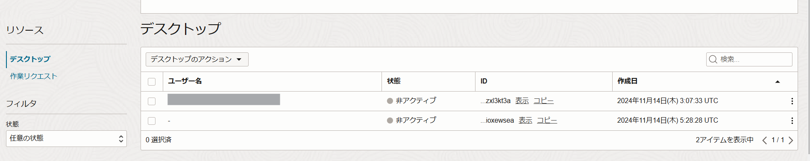
以上で、セキュア・デスクトップのチュートリアルは終了です。